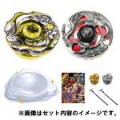

First Zero-G Battle Set
| First Zero-G Battle Set | |
|  | |
| Number: | BBG-21 |
|---|---|
| System: | Beyblade Zero-G |
Contents
This Set was released by TAKARA-TOMY on August 11th 2012 for approximately 4095 yen.
Contents
- Samurai Ifraid W145CF (Clear Yellow)
- Guardian Revizer 160SB (Clear Red Guardian, opaque Black Face, clear White 160SB)
- Zero-G Stadium Attack Type (Yellow tabs)
- Zero-G Compact Launcher (Gold)
- Zero-G Compact Launcher (Silver)
- Zero-G Road to Win Guide
Overall
The First Zero-G Battle Set contains interesting recolours, as well as some competitive parts like W145 and Revizer, however it is generally not worth purchasing this Set at that price. The Zero-G Stadium Attack Type, although good, is available in other Sets and separately; the Samurai Ifraid recolour is partially present in another product already; and it only comes with two Zero-G Compact Launchers, which are inferior to the Zero-G Light Launcher and the Zero-G Beylauncher. Furthermore, the Zero-G Road to Win Guide provides no particularly good and unknown information. In conclusion, especially if one started purchasing Zero-G products in its early months already, there is no reason to buy this Set besides for collection purposes.
Gallery
-
Zero-G Road to Win Guide
-
BBG-21 First Zero-G Battle Set box